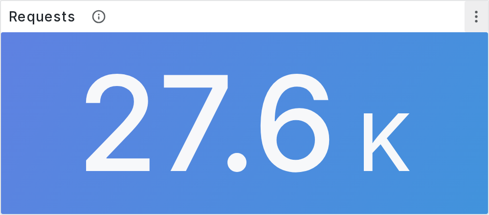
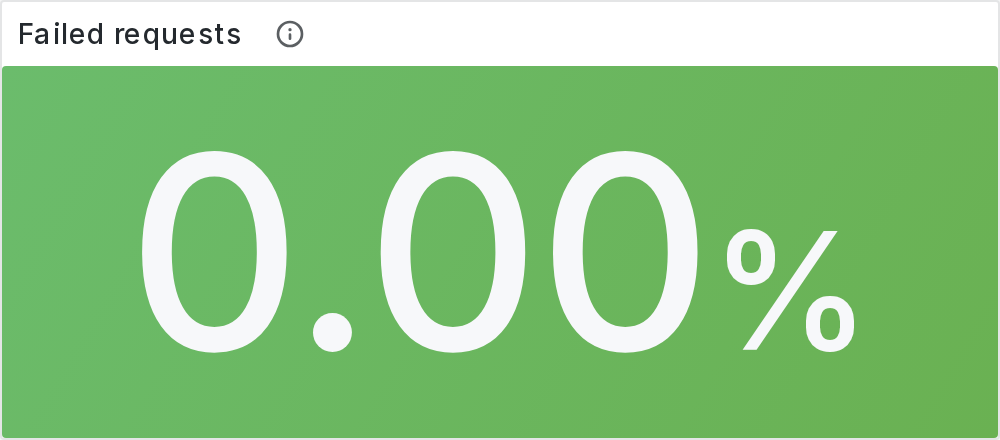
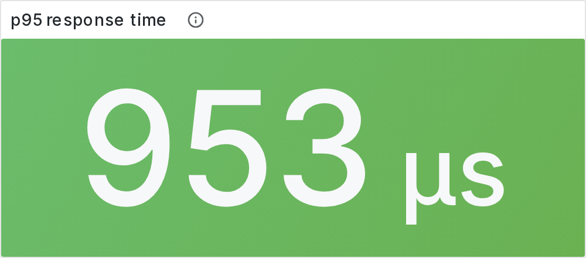
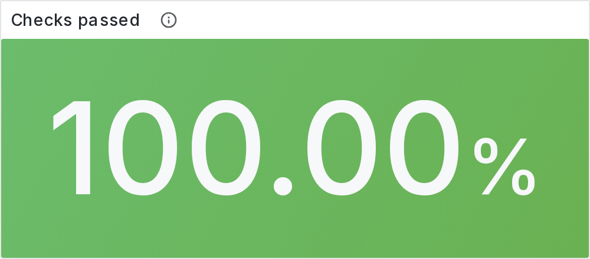
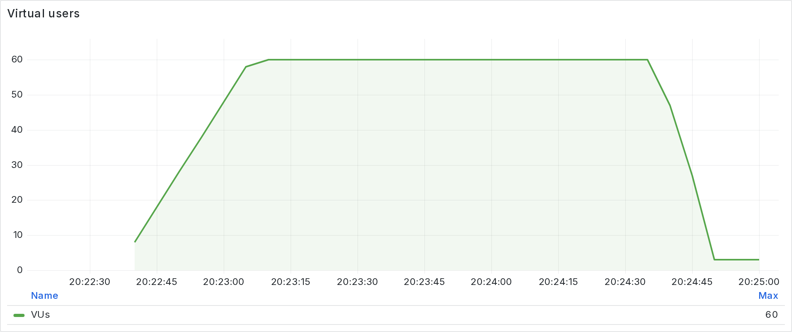
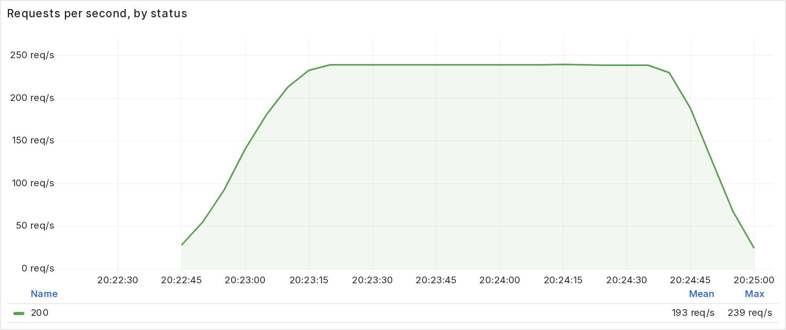
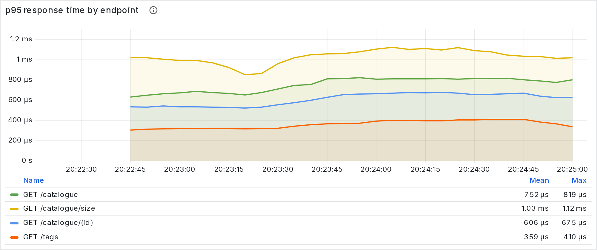
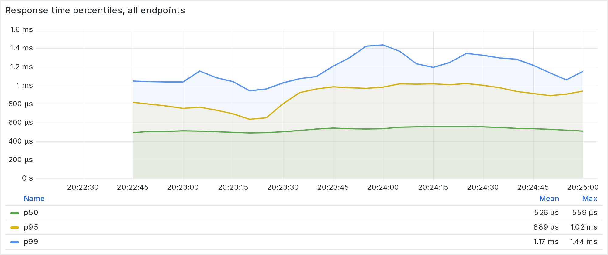
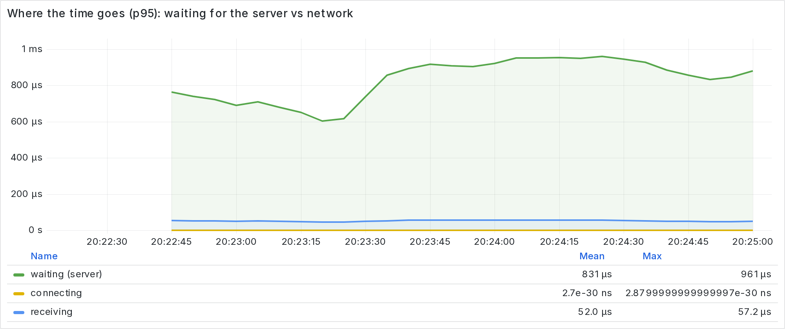
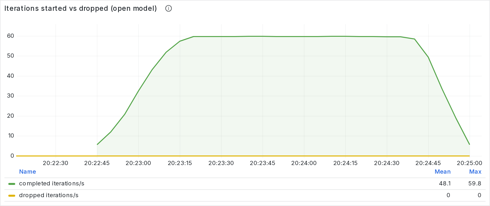

All runs
catalogue-browse · stress
Test id catalogue-browse-stress-2026-10-21-20-22-30, 2026-10-21 20:22:30 UTC, 138 s.
k6 summary: 27064 requests, 200 req/s, p95 0.95 ms, failed 0.00 %.
k6 HTML report

Requests

Failed requests

p95 response time

Checks passed

Virtual users

Requests per second, by status

p95 response time by endpoint

Response time percentiles, all endpoints
Failed requests per second, by endpoint

Where the time goes (p95): waiting for the server vs network

Iterations started vs dropped (open model)